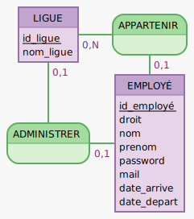

Projet Java
Initiation au Java
Notre projet Java, réalisé en équipe de trois personnes, consiste en un gestionnaire d'employés et de ligues pour la Maison des Ligues (M2L). Nous avons débuté le projet en établissant un arbre heuristique pour planifier nos tâches et définir nos objectifs de développement. Cette approche nous a permis de visualiser clairement les différentes étapes à franchir pour mener à bien le projet. Nous avons également travaillé sur la conception d'un Modèle Conceptuel de Données (MCD) pour structurer efficacement la base de données de l'application. Le MCD nous a fourni un aperçu détaillé des entités et des relations nécessaires pour représenter les employés, les ligues et les niveaux d'habilitation des utilisateurs. En ce qui concerne le développement proprement dit, nous avons utilisé Git et GitHub pour le versionnement de notre code. Cette approche nous a permis de collaborer de manière fluide, de suivre l'évolution du projet et de gérer efficacement les différentes versions du logiciel. Chacun d'entre nous a pu contribuer au code, suivre les modifications apportées par les autres membres de l'équipe et résoudre les éventuels conflits de fusion. Ainsi, grâce à notre collaboration étroite et à notre utilisation efficace des outils de gestion de projet et de versionnement, nous avons pu développer une application robuste et fonctionnelle répondant aux besoins de gestion des employés et des ligues pour la M2L.
Projet Java
MCD
Notre Modèle Conceptuel de Données (MCD) constitue la pierre angulaire de notre projet de gestion d'employés et de ligues pour la Maison des Ligues (M2L). Ce modèle fournit une représentation visuelle des entités clés telles que les employés, les ligues et les niveaux d'habilitation des utilisateurs, ainsi que des relations entre ces entités. À travers le MCD, nous avons défini les différentes propriétés et caractéristiques de chaque entité, ainsi que les associations et les contraintes qui régissent leurs relations. Cela nous a permis de concevoir une structure de base de données cohérente et efficace pour stocker et manipuler les informations relatives aux employés et aux ligues.
Projet Java
Arbre heuristique
Notre Arbre Heuristique représente la feuille de route initiale de notre projet de gestion d'employés et de ligues pour la Maison des Ligues (M2L). Cette approche stratégique nous a permis de planifier nos tâches et de définir les étapes clés de développement de manière organisée et méthodique. À travers l'Arbre Heuristique, nous avons identifié les différentes phases du projet, telles que l'analyse des besoins, la conception du système, le développement de l'application, les tests et la mise en production. Chaque phase était subdivisée en tâches spécifiques, permettant une gestion efficace des priorités et des dépendances entre les différentes activités. En utilisant cet outil, nous avons pu visualiser clairement les objectifs à atteindre à chaque étape du projet, ce qui nous a aidés à rester concentrés sur les résultats finaux. L'Arbre Heuristique a également facilité la répartition des responsabilités au sein de l'équipe et la communication des progrès réalisés.